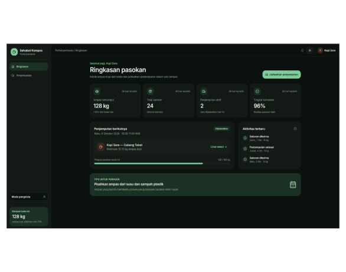
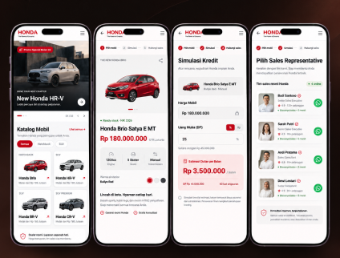
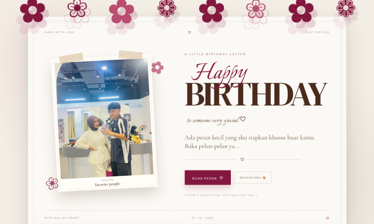

Sistem Monitoring Kompos Berbasis AI & IoT
Alat monitoring berbasis AI dan integrasi IoT dengan dashboard pemantauan real-time untuk proses pengolahan pupuk kompos dari daun kering dan ampas kopi.
I’m Dwiky — I build digital experiences through technology.
Information Systems Student · Web Developer · Smart City Enthusiast
Passionate about web development, digital innovation, and exploring how technology can create meaningful solutions for everyday challenges.
A collection of digital experiences, technical explorations, and creative solutions developed through academic projects and personal initiatives.
View all projects ↗
Alat monitoring berbasis AI dan integrasi IoT dengan dashboard pemantauan real-time untuk proses pengolahan pupuk kompos dari daun kering dan ampas kopi.

Website katalog digital interaktif yang dilengkapi kalkulator simulasi kredit/tenor serta integrasi langsung ke WhatsApp Sales Representative.

Web service komersial yang menyajikan ucapan ulang tahun interaktif, kustomisasi pesan, animasi personal, serta pengiriman digital.
I'm Dwiky Kristian Dermawan, an Information Systems student at Politeknik Negeri Balikpapan with a growing passion for web development and digital innovation.
Currently in my third semester, I enjoy exploring new technologies, building digital solutions, and learning how information systems can contribute to a smarter future. Beyond technology, I also serve as a Campus Ambassador at Politeknik Negeri Balikpapan for 2026.
A little more about me ↗Exploring technology through code, hardware, and creative problem-solving. Here are some of the areas I'm currently focused on expanding:
Building responsive and functional user interfaces using modern web technologies.
Organizing, managing, and working with structured data using PostgreSQL & MySQL.
Exploring web technologies, interactive solutions, AI tools, and digital platforms.
Exploring how information systems can support smarter and more sustainable urban environments.
A modern automotive website designed to help customers explore vehicle models with ease and modern interaction.
A digital platform tailored for automotive dealership customers, featuring an interactive vehicle catalog, detailed specs, calculated credit options, and direct WhatsApp messaging for a seamless customer-to-sales representative flow.
Explore my work ↗Uncovering the problems and requirements before beginning to build a solution.
Structuring the logic, designing the interface, and determining the technology to be used.
Writing clean code, testing functionalities, and integrating systems step by step.
Launching the final project, gathering feedback, and making iterative improvements.
I’m always open to exploring new technologies, collaborating on interesting projects, and building digital solutions that make a difference.